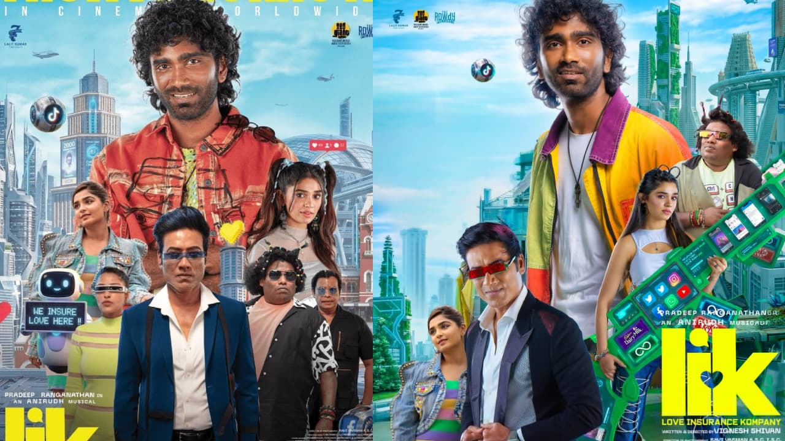

The complete cast and crew for the 2026 Tamil science-fiction romantic comedy film LIK: Love Insurance Kompany is detailed below.Star CastPradeep Ranganathan as Vaibhav "Vas" / "Vibe"Krithi Shetty as DheemaS.J. Suryah as SuriyanYogi Babu as Kali / HimselfGouri G. Kishan as KishanSeeman as Senthamizhan SeemanAnandaraj as Jolly PrabhuShah Ra as MalavikaSunil Reddy as Rangaraj PandeyVTV Ganesh as ActorTechnical CrewDirector & Writer: Vignesh ShivanProducers: Nayanthara and S. S. Lalit KumarMusic Composer: Anirudh RavichanderCinematographer: Ravi VarmanFilm Editor: Pradeep E. RagavProduction Houses: Rowdy Pictures and Seven Screen Studio
The complete cast and crew:
Movie Crew
You can book tickets to LIK: Love Insurance Kompany in Chennai using local platforms like BookMyShow or Ticketnew. The film stars Pradeep Ranganathan, Krithi Shetty, and S.J. Suryah and runs for about 2 hours and 36 minutes.Since theatrical runs for older films are limited, if showtimes are no longer available in your local theatres, you can stream it online via Prime Video.If you want to watch this in the cinema
Love Insurance Kompany (LIK) is an Indian Tamil-language science fiction romantic-comedy film. It is not a real insurance provider, so it does not have official customer service or corporate contact details.If you are trying to contact the production team or stream the movie directed by Vignesh Shivan:Production: You can reach out to the production houses, The Rowdy Pictures or Seven Screen Studio, which produced the film.Streaming: The movie is available for streaming on Prime Video.